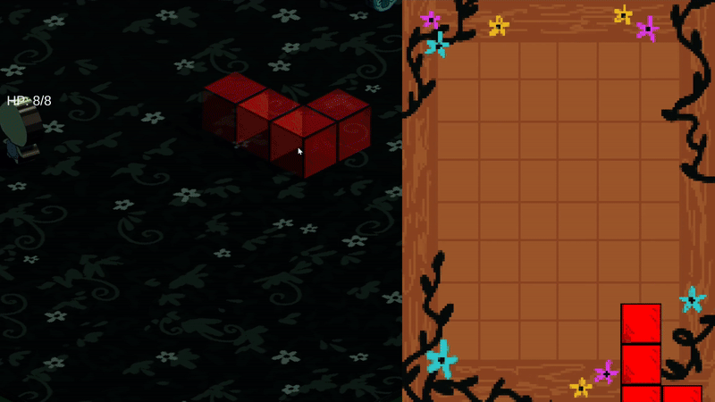

Tools Used:
Outils Utilisés:
- Unity
- C#
- Role: Gameplay Programmer
- Rôle: Programmeur de Gameplay
- Team Size: 7
- Taille D'Équipe: 7
- Development Time: 48 Hours
- Temps De Développement: 48 Heures
This game was developed in 48 hours during the Unity 2026 Global Game Jam in Montreal with the theme being "Mask". I was responsible for programming the main gameplay mechanic: placing down blocks that enemies will collide with, mixing their respective colours, thus tying into our interpretation of the theme, being colour masking.
Ce jeu a été développé en 48 heures lors du Unity 2026 Global Game Jam à Montréal, sur le thème «Masque». J'étais chargé de programmer le mécanisme principal du jeu: placer des blocs avec lesquels les ennemis entreront en collision, mélanger leurs couleurs respectives, ce qui correspondait à notre interprétation du thème, à savoir le masquage des couleurs.
Block Placement
Placement Des Blocks
Programming the logic for placing the colored blocks in the world is broken down into two main parts: Dragging the 2D block object from the UI to the world, and snapping the 3D block object to a plane before it becomes active.
La programmation de la logique permettant de placer les blocs colorés dans le monde se divise en deux parties principales : faire glisser l'objet bloc 2D depuis l'interface utilisateur vers le monde, et aligner l'objet bloc 3D sur un plan avant qu'il ne devienne actif.
Once a block on the UI has been selected, an instance of its 3D equivalent is created, and spawned on a plane. Its spawn location is determined by a raycast from the player's mouse placement to a plane where the blocks and enemies are located.
Une fois qu'un bloc a été sélectionné dans l'interface utilisateur, une instance de son équivalent 3D est créée et générée sur un plan. Son emplacement de génération est déterminé par un raycast entre la position de la souris du joueur et un plan où se trouvent les blocs et les ennemis.
public Vector3 BlockCoords()
{
Ray ray = Camera.main.ScreenPointToRay(Input.mousePosition);
float distance;
if (groundPlane.Raycast(ray, out distance))
{
// Get the point on the plane where the ray intersects
Vector3 worldPosition = ray.GetPoint(distance);
return worldPosition;
}
else
{
return Vector3.zero;
}
}
Colour Mixing System
Mélanger Les Couleurs
Enemies have variables for RGB values. When an enemy hits a block, their respective colors get merged, and when their color reaches RGB(255,255,255), it gets destroyed.
Les ennemis ont des variables pour les valeurs RVB. Lorsqu'un ennemi heurte un bloc, leurs couleurs respectives fusionnent, et lorsque leur couleur atteint RVB(255,255,255), il est détruit.
public void MergeColor(Color newColor)
{
// XOR-like merge for each channel
float r = (currentColor.r >= 0.92f && newColor.r == 1f) ? 0f : currentColor.r + newColor.r;
float g = (currentColor.g >= 0.92f && newColor.g == 1f) ? 0f : currentColor.g + newColor.g;
float b = (currentColor.b >= 0.92f && newColor.b == 1f) ? 0f : currentColor.b + newColor.b;
// Clamp to 1 in case both were 0.5 for example
currentColor = new Color(Mathf.Clamp01(r), Mathf.Clamp01(g), Mathf.Clamp01(b));
SetColor(currentColor);
}What I Learned
Ce Que J'ai Appris
This game jam helped me develop practical skills that are directly applicable to game programming and programming-adjacent roles such as QA and test automation. Working within a 48-hour deadline forced me to write gameplay systems that were clear, predictable, and easy to debug, rather than overly complex.
Ce game jam m'a aidé à développer des compétences pratiques directement applicables à la programmation de jeux et à des rôles connexes tels que l'assurance qualité et l'automatisation des tests. Le fait de travailler dans un délai de 48 heures m'a obligé à écrire des systèmes de gameplay clairs, prévisibles et faciles à déboguer, plutôt que trop complexes.
Implementing the block placement system gave me experience translating user input from UI space into reliable world-space interactions using raycasting and collision logic. I focused on making this system deterministic and consistent, which made it easier to test and adjust during rapid iteration.
L'implémentation du système de placement de blocs m'a permis d'acquérir de l'expérience dans la conversion des entrées utilisateur de l'espace UI en interactions fiables dans l'espace mondial à l'aide du raycasting et de la logique de collision. Je me suis concentré sur la déterminisme et la cohérence de ce système, ce qui a facilité les tests et les ajustements pendant les itérations rapides.
The colour mixing mechanic reinforced the importance of data-driven design and edge case handling. By representing enemy states through RGB values and clamping results, I ensured consistent behaviour even in unexpected scenarios. This approach made the system easier to validate, balance, and reason about during playtesting.
Le système de mélange des couleurs a renforcé l'importance de la conception basée sur les données et du traitement des cas limites. En représentant les états des ennemis à l'aide de valeurs RVB et en limitant les résultats, j'ai garanti un comportement cohérent, même dans des scénarios imprévus. Cette approche a facilité la validation, l'équilibrage et l'analyse du système pendant les tests de jeu.
Finally, collaborating in a multidisciplinary team strengthened my communication and adaptability. I regularly adjusted my code based on feedback from designers and artists, and learned how to prioritize stability and clarity under tight deadlines, which that are essential for internship roles focused on gameplay programming, QA, and autotesting.
Enfin, le fait de collaborer au sein d'une équipe multidisciplinaire a renforcé mes capacités de communication et d'adaptation. J'ai régulièrement ajusté mon code en fonction des commentaires des concepteurs et des artistes, et j'ai appris à privilégier la stabilité et la clarté dans des délais serrés, ce qui est essentiel pour les stages axés sur la programmation de jeux, l'assurance qualité et les tests automatiques.
